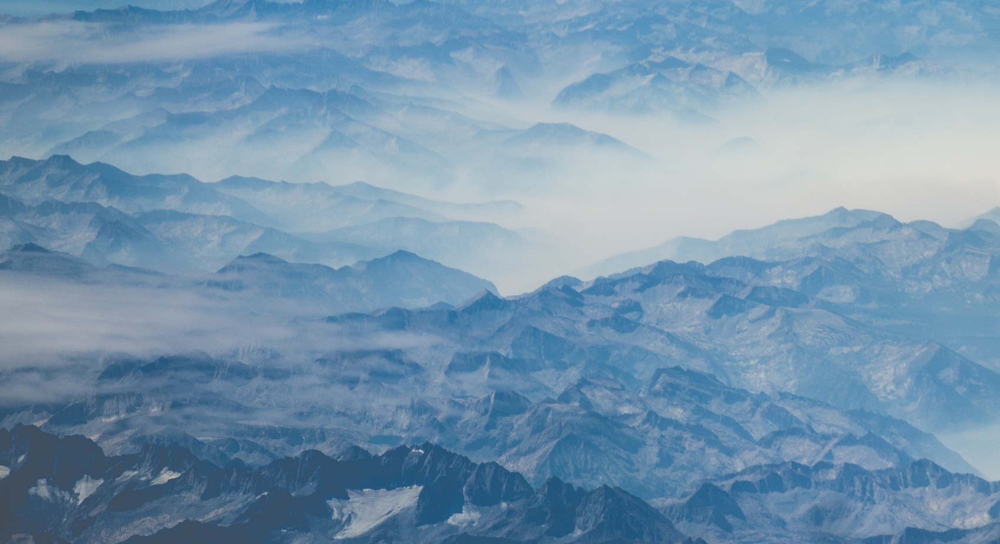

<!DOCTYPE html>
<html>
<head>
<!-- Load the Paper.js library -->
<script type="text/javascript" src="js/paper.js"></script>
<!-- Load external PaperScript and associate it with myCanvas -->
<script type="text/paperscript" canvas="ImageSquare">
// Create a raster item using the image tag with id='mona'
var raster = new Raster('image');

// Hide the raster:
raster.visible = false;

// The size of our grid cells:
var gridSize = 50;

// Space the cells by 120%:
var spacing = 1;

// As the web is asynchronous, we need to wait for the raster to load
// before we can perform any operation on its pixels.
raster.on('load', function() {
	// Since the example image we're using is much too large,
	// and therefore has way too many pixels, lets downsize it to
	// 40 pixels wide and 30 pixels high:
	raster.size = new Size(500, 350);


	for (var i = 0; i < 8; i++) {
        y = Math.floor((Math.random() * raster.height) + 1);
        x = Math.floor((Math.random() * raster.width) + 1);

			// Get the color of the pixel:
			var color = raster.getPixel(x, y);

      var rectangle = new Rectangle(x, y, 50, 50);
      var path = new Path.Rectangle(rectangle);

			// Set the fill color of the path to the color
			// of the pixel:
			path.fillColor = color;

	}

	// Move the active layer to the center of the view, so all
	// the created paths in it appear centered.
	project.activeLayer.position = view.center;
});

// Move the active layer to the center of the view:
project.activeLayer.position = view.center;


</script>
<style>
  canvas{
    width:500px;
    height:350px;
  }
  img {
    width:100%;
    height:100%;
  }
  .container {
    width:500px;
    height:350px;
  }
</style>
</head>
<body>
  <div class="container">
    <!-- </img>-->
  	<canvas id="ImageSquare">
  	  </img>
  	</canvas>
  </div>

</body>
</html>
